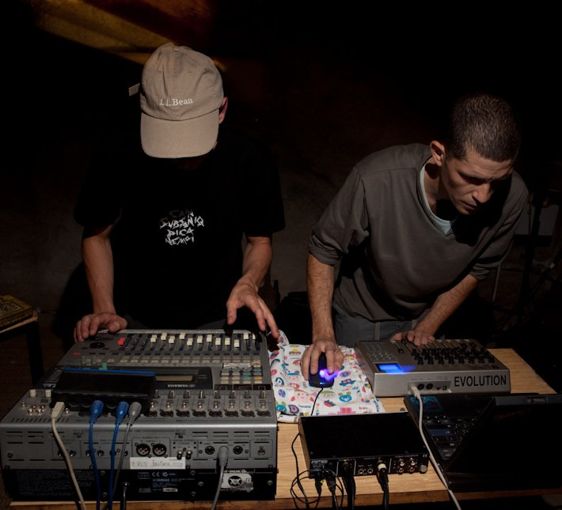
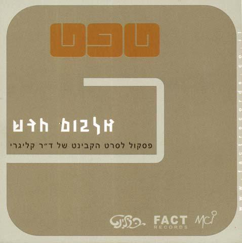

טפט
אדם/קבוצה

טפט הוא הרכב שקם כמעין פרוייקט המשך לחזית האלקטרונית על ידי שניים מחבריה – אביעד אלברט ובניה רכס. ההרכב סימן מעבר מהרכב האימפרוביזציה של החזית E-Front Allstars (שהשתתפו בו מלבד אלברט ורכס גם רם אוריון ואורי סוכרי), שהיה מבוסס על ביט, לאילתור יותר אמביינטי. שם ההרכב טפט סימן זאת גם כמשהו שנועד להיות ברקע.
הפרוייקטים שלהם היו לרוב הופעות באירועי תרבות כמו בפתיחות תערוכות במוזיאון הרצליה – תערוכה של אורי קצנשטיין ב־1998 ופתיחה של אגף חדש ב־2000, ובסינמטק ירושלים, כשביצעו פסקול חי לסרט "הקבינט של ד"ר קליגרי". הבחירה נעשתה באירועים שבהם המוזיקאים לא יהיו בפוקוס אלא ברקע של האירוע. בהופעה במוזיאון הרצליה ב־2000, לדוגמה, הציבו מוצג שבו היה מיקרופון שהקליט מה שאנשים דיברו סביבו, כשחלק מהאנשים היו מודעים לכך וחלקם לא, וטפט שילבו זאת במוזיקה שיצרו. מהעבודה הזו נוצר האלבום "אף אחד לא שמע", שכמו מרבית אלבומי הלהקה היה הקלטה חיה. רוב המוזיקה שהוציאו הייתה בלייבל של יורם אליקים פאקט רקורדס.
קליפ לקטע Prahey מהאלבום Taapet Sounds
מאז 2002 הפעילות של טפט הצטמצמה. ההרכב הוא לא בדיוק להקה אלא קיים כשיש לחבריו את האנרגיה ופרוייקט חדש לעבוד עליו. מרבית הפעילות הייתה בתחילת שנות ה־2000 וחזרה קטנה לפעילות סביב 2011.
פרוייקטים נוספים של חברי ההרכב:
אביעד אלברט יצר מוזיקה תחת השם פינקלשטיין (כינוי שהוצמד לו כשהופיע בערב אקספרימנטלי בדיוואן). מלבד זאת יצר את ההרכב הניסיוני GWFZ עם ערן זקס, שלאחר מכן התפתח לליטרשפיך, מעין סופרגרופ של מוזיקת נויז, בו היו חברים גם דודיק אופנהיים מ־3ח, עלמה בן יוסף (פנדה פורן), רני זגר מהאוזן השלישית ועוז מיכאלי. ממנו התפתח ההרכב בלטה של אלברט ואופנהיים. בניה רכס עוסק באמנות, בעיקר מיצבי סאונד, וביצירת סאונד לסרטים ווידיאו ארט.
אביעד אלברט יצר מוזיקה תחת השם פינקלשטיין (כינוי שהוצמד לו כשהופיע בערב אקספרימנטלי בדיוואן). מלבד זאת יצר את ההרכב הניסיוני GWFZ עם ערן זקס, שלאחר מכן התפתח לליטרשפיך, מעין סופרגרופ של מוזיקת נויז, בו היו חברים גם דודיק אופנהיים מ־3ח, עלמה בן יוסף (פנדה פורן), רני זגר מהאוזן השלישית ועוז מיכאלי. ממנו התפתח ההרכב בלטה של אלברט ואופנהיים. בניה רכס עוסק באמנות, בעיקר מיצבי סאונד, וביצירת סאונד לסרטים ווידיאו ארט.

ידיעה על יציאת שני אלבומים, ״פסקול לסרט הקבינט של ד״ר קליגרי״ ו״אף אחד לא שמע״, במוסף התרבות של מעריב, 2000

פלאייר לאלבום "פסקול לסרט הקבינט של ד"ר קליגרי"